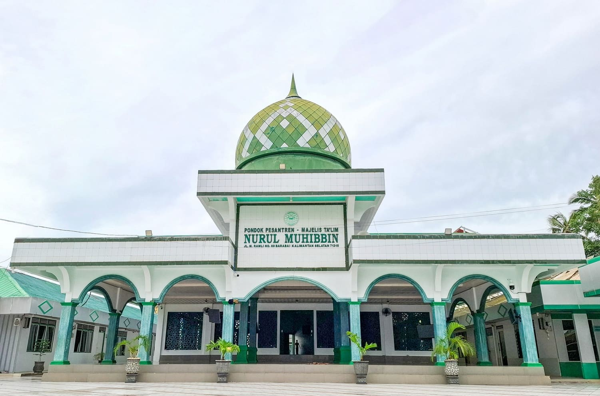
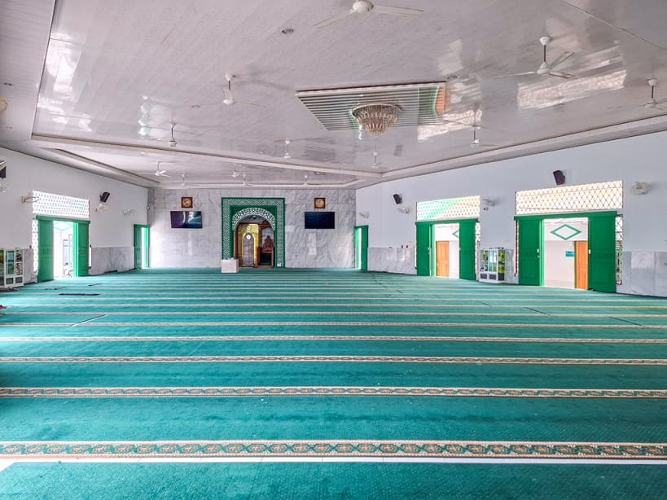
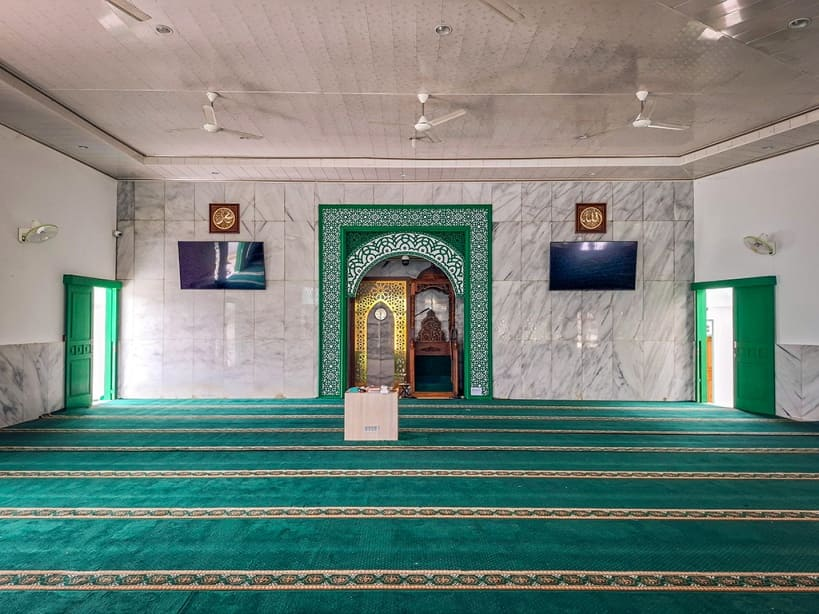

<div id="ajax-page" class="ajax-page-content">
    <div class="ajax-page-wrapper">
        <div class="ajax-page-nav">
            <div class="nav-item ajax-page-prev-next">
                <a class="ajax-page-load" href="Galeri-gerbang.html"><i class="lnr lnr-chevron-left"></i></a>
                <a class="ajax-page-load" href="Galeri-asrama.html"><i class="lnr lnr-chevron-right"></i></a>
            </div>
            <div class="nav-item ajax-page-close-button">
                <a id="ajax-page-close-button" href="#"><i class="lnr lnr-cross"></i></a>
            </div>
        </div>

        <div class="ajax-page-title">
            <h1>MUSHALLA ATAU TEMPAT SHALAT</h1>
            <h4>Pondok Pesantren Nurul Muhibbin Barabai</h4>
        </div>

        <div class="row">
            <div class="col-sm-8 col-md-8 portfolio-block">

                <div class="owl-carousel portfolio-page-carousel">
                    <div class="item">
                        
                        <p>Mushalla Pondok Pesantren Nurul Muhibbin Barabai (depan)</p>
                    </div>
                </div>

                <div class="owl-carousel portfolio-page-carousel">
                    <div class="item">
                        
                        <p>Mushalla Pondok Pesantren Nurul Muhibbin Barabai (dalam)</p>
                    </div>

                    <div class="item">
                        
                        <p>Mushalla Pondok Pesantren Nurul Muhibbin Barabai (dalam)</p>
                    </div>
                </div>

                <!--
                <div class="portfolio-page-video embed-responsive embed-responsive-9by16"> -->   <!--embed-responsive-16by9-->
                <!--    <iframe class="embed-responsive-item" src="https://player.vimeo.com/video/97102654?autoplay=0"></iframe>
                
                        <iframe width="342" height="607" src="https://www.youtube.com/embed/mupBIK09hzo?autoplay=1&controls=0&loop=1" title="KH  Muhammad Bakhiet  AM  Barabai  Malam Selasa  18 November 2024" frameborder="0" allow="accelerometer; autoplay; clipboard-write; encrypted-media; gyroscope; picture-in-picture; web-share" referrerpolicy="strict-origin-when-cross-origin" allowfullscreen></iframe>                </div>
                -->

                <script type="text/javascript">
                    jQuery(document).ready(function($){
                        $('.portfolio-page-carousel').imagesLoaded(function(){
                            $('.portfolio-page-carousel').owlCarousel({
                                smartSpeed:1200,
                                items: 1,
                                loop: true,
                                dots: true,
                                nav: true,
                                navText: false,
                                margin: 10,
                                autoHeight:true
                            });
                        });
                    });
                </script>
            </div>

            <div class="col-sm-4 col-md-4 portfolio-block">
                <!-- Project Description -->
                 
                <div class="project-description">
                    <div class="block-title">
                        <h3>Diskripsi</h3>
                    </div>

                   <style>
                        p  {
                            text-align: justify;
                        }
                        ol {
                            margin: 0 18px;
                        }
                        ul {
                            margin: 0 18px;
                        }
                        li {
                            margin-bottom: 5px;
                        }
                        strong {
                            color: #009a4c;
                        }
                    </style>

                    <p> Mushalla di pondok pesantren adalah <strong> pusat kegiatan spiritual yang memiliki peran penting dalam pembentukan karakter santri</strong>. </p>
                    <p> Bangunan ini biasanya dirancang sederhana namun penuh makna, dengan suasana yang khusyuk dan menenangkan. </p>
                    <p> Mushalla menjadi tempat di mana santri melaksanakan shalat berjamaah lima waktu, yang bukan hanya sebagai kewajiban ibadah, tetapi juga sarana mempererat ukhuwah Islamiyah di antara mereka. </p>
                    <p> Selain shalat berjamaah, Mushalla sering digunakan untuk kegiatan amaliyah seperti membaca surah-surah pilihan setelah shalat Maghrib. Aktivitas ini menjadi salah satu bentuk pembiasaan dalam memperdalam bacaan Al-Qur’an dan memahami kandungan maknanya. </p>
                    <p> Suasana khusyuk selalu terasa ketika para santri melantunkan ayat-ayat suci dengan penuh penghayatan, dipandu oleh ustadz. Tradisi ini membantu santri mengembangkan kedisiplinan dan kesadaran spiritual yang mendalam. </p>
                    <p> Tak hanya itu, <strong> Mushalla juga menjadi pusat berbagai acara keagamaan lainnya</strong>, seperti pengajian malam Selasa, peringatan hari besar Islam, dan kajian keilmuan. </p>
                        
                    <!--<p class="text-justify">Aliquam euismod aliquam massa, quis eleifend dui sodales vitae. Interdum et malesuada fames ac ante ipsum primis in faucibus.</p> -->
                    <!-- /Project Description -->

                    <!-- Technology -->
                     <!--
                    <div class="tags-block">
                        <div class="block-title">
                            <h3>Technology</h3>
                        </div>
                        <ul class="tags">
                            <li><a>HTML5</a></li>
                            <li><a>CSS3</a></li>
                            <li><a>jQuery</a></li>
                            <li><a>Ajax</a></li>
                            <li><a>PHP5</a></li>
                        </ul>
                    </div>
                    -->
                    <!-- /Technology -->

                    <!-- Share Buttons -->
                    <div class="share-buttons">
                        <div class="block-title">
                            <h3>Bagikan</h3>
                        </div>
                        <div class="share-buttons-group">
                            <a href="https://www.facebook.com/share.php?u=psbnmb.ct.ws" target="_blank" class="btn"><i class="fab fa-facebook-f"></i> </a>
                            <a href="#" target="_blank" class="btn"><i class="fab fa-twitter"></i> </a>
                            <a href="#" target="_blank" class="btn"><i class="fab fa-dribbble"></i> </a>
                        </div>
                    </div>
                    <!-- /Share Buttons -->
                </div>
                <!-- Project Description -->
            </div>
        </div>
    </div>
</div>
